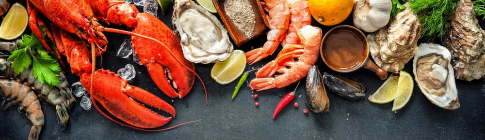

Carousel
The Carousel plugin is a component for cycling through elements, like a carousel (slideshow).
#class="carousel" specifies that this -div- contains a carousel #data-ride="carousel" attribute tells Bootstrap to begin animating the carousel immediately when the page loads #carousel slide - give animating effect - auto scroll #carousel-indicators - dots or buttons at bottom of each slide #The slides are specified in a -div with class .carousel-inner. #The data-slide attribute accepts the keywords "prev" or "next", which alters the slide position relative to its current position. adds "left" and "right" buttons #carousel-caption adds caption text section for each slide
Slides only - Simple Carousel - auto scrolls


With controls - Adding in the previous and next controls
With indicators - at bottom + controls
With captions + everything els
Sea Food
All the sea food used in dishes
Prawn
The term prawn is used particularly in the United Kingdom, Ireland, and Commonwealth nations, for large swimming crustaceans or shrimp.
Fish
Fish are gill-bearing aquatic craniate animals that lack limbs with digits. They form a sister group to the tunicates, together forming the olfactores.